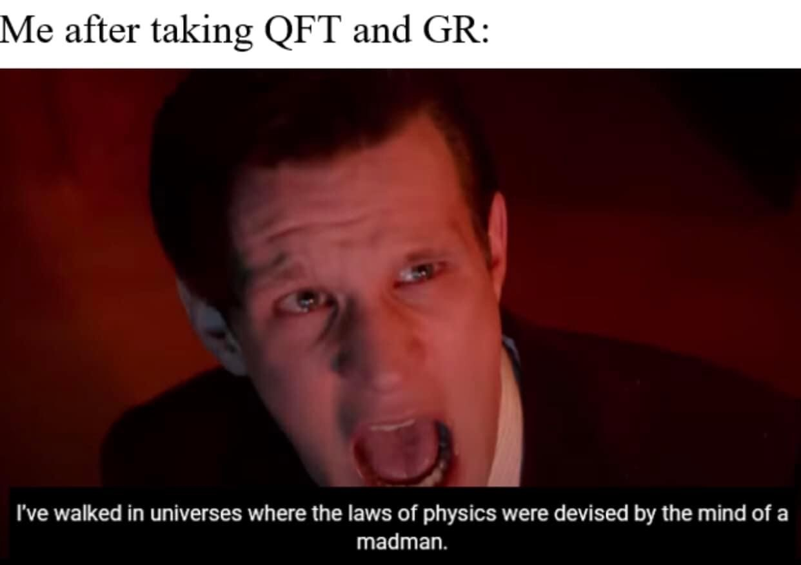

About Me

Education: Case Western Reserve University, BS in Mathematics and Physics
Research Interests
Cosmic Gravitational Wave Backgrounds, Quantum Field Theory in Curved Spacetime, Early Universe Cosmology, Quantum Cosmology, Gravitational Particle Production
Biography
I grew up in a part of Central Brooklyn, New York called East Flatbush where I went to St Therese of Lisieux School of Little Flower from Pre-K to 8th grade. I originally wanted to be a medical doctor so when I attended Bishop Loughlin Memorial High School, I enrolled in two separate programs whose mission was to get more underrepresented minorities into health-related fields. I eventually realized that my true passion was studying physics which is what I decided to major in toward the end of my senior year of high school. After enrolling at Case Western Reserve University, I decided I wanted to pursue a career in theoretical physics so I ended up getting a B.S. in Mathematics & Physics (single degree). As a PhD candidate at the University of Pittsburgh, my research interests has evolved to become centered around understanding how the universe has evolved over its lifetime and the fundamental role that gravity plays in that story.
Research
Latest Preprints & Publications
Elastic Scattering of Cosmological Gravitational Wave Backgrounds: Primordial Black Holes and Stellar Objects, An SZ-Like Effect on Cosmological Gravitational Wave Backgrounds, An Exact Fermionic Chern-Simons-Kodama State in Quantum Gravity
Full Publication Lists: InspireHep, NASA ADS, arXiv, Google Scholar
Research Statement
Broadly speaking, my research program is centered at the interface of cosmology and gravitation. Gravity dictates the cosmological dynamics of the universe, the collapse of primordial overdensities and subsequent growth of structure, the propagation of gravitational wave backgrounds as well as being a central player in the quantum mechanical description of the initial Big Bang singularity. As a result, cosmology makes for an excellent laboratory to gauge the properties of gravity. The converse also holds: gravity can provide us with an unprecedented look into the evolution of the universe over its lifetime. As a result of this interplay, my work is focused on using the tools and understanding of one to gain insight into the other. This has encompassed statistical analysis of large data sets of properties of galaxy clusters, to theoretical analyses of the initial quantum state of the universe, while also incorporating phenomenological investigations of cosmological gravitational wave backgrounds.
In my first paper (2205.13015), we calculated the predictions for the statistical properties of galaxy clusters for various modified gravity models using large volume simulations. We can then compare these predictions to sky surveys which places constraints on modified gravity through cosmic microwave background experiments including the Planck Satellite, the Atacama Cosmology Telescope (ACT), and the South Pole Telescope (SPT). These instruments have mapped large sky regions at angular resolution and sensitivity sufficient to detect thousands of galaxy clusters via the thermal Sunyaev-Zeldovich effect. Because galaxy clusters form in locations that correspond to the rare peaks in the initial mass distribution and their total mass can be estimated via optical weak gravitational lensing in a relatively clean way, they can act as excellent tracers of the large-scale structure of the universe. We are interested because we can measure their basic properties with the microwave background in a way that potentially avoids various systematic errors. Typically, cosmologists use the CMB power spectrum and halo mass function as tests of gravity, but there is an even more direct measurement being the mean pairwise velocity. The mean pairwise velocity is the average relative radial velocity along the line of separation between any pair of objects, where the averaging is done over all pairs. It can probe gravity because the velocity along the line of separation will be dominated by the mutual gravitational attraction between halos. Most excitedly, it can potentially be measured precisely with future observations of small effects such as the transverse lensing effect which hasn’t been measured yet, and with some modeling using the kinematic SZ effect which has observed with ACT, SPT, and Planck. This leads to the conclusion that instruments at the Simons Observatory and ACT are getting to the sensitivities necessary for examining tiny deviations from standard Big Bang cosmology. The next steps for this project are well defined: we wish to create simulations of sky maps using the Websky algorithm the current data set from the ACT, and upcoming more sensitive maps from the Simons Observatory. I anticipate that I will be involved in both ventures at some capacity.
My second paper (Phys. Rev. D 106, 10612 (2022)), was on canonical quantum gravity. We were able to find the wave function for a Weyl-spinor field on a FLRW background which amounts to an extension of previous work done by James Hartle and Steven Hawking in their groundbreaking paper “Wave function of the universe”. Due to the diffeomorphism invariance of the theory, the Hamiltonian enters in as a constraint equation and thus by promoting the fermionic Hamiltonian to the level of an operator, we were able to find an exact solution to the equations of motion. We found that gravity and fermions form an entangled state that gravitons and any other particle does not. This potentially shows that fermions might occupy a privileged position when it comes to quantizing gravity. Second, when one adds torsion to the spin connection, the Big Bang singularity can be avoided entirely. Theorists have always regarded the presence of singularities to be unphysical indications that we were missing a more fundamental theory and this paper can act as a sort of justification for those views. Third that when the contributions given by the fermions are sufficiently small, then our wave function can safely be interpreted as Hawking’s “Wave Function of the Universe” with perturbative corrections introduced by the matter sector.
My last two papers (JCAP12(2023)041 & JCAP01(2024)045) developed the formalism and demonstrated an application of elastic scattering of cosmological gravitational wave backgrounds (CGWBs). CGWBs represent an isotropic collection of unresolved gravitational wave signals from the early universe. Because gravitons decouple from the cosmic plasma early on, one can consider interactions between gravitons and any particle species that were present in the very early universe. Analogous to the CMB, elastic scattering on any cosmological background will induce small spectral distortions in its energy density spectrum. In the case of a CGWB, we showed that given these distortions, one can place constraints on primordial black holes (PBHs). PBHs are generally studied within the context of dark matter (DM) candidates, and as such many constraints have been placed on the fraction of DM they can constitute. However, there is still a region of parameter space where PBHs can have masses comparable to asteroids (i.e., M \in [10^(16)M_sun, 10^(-11)M_sun]) where PBHs can still account for 100% of the total DM in the universe. We showed that by considering elastic scattering of a CGWB, asteroid-mass PBHs induce distortions on the background up to 0.3% at cosmologically relevant frequencies.
Teaching

Here are study guides I made as a graduate teaching assistant as well as all of the courses I've TA'd for. The guides will be most helpful for 1st year freshmen taking their first physics courses and want some guide as to how to start problems in kinematics and Gauss's law.
I've also had the opportunity to participate in numerous outreach events including, but not limited to three Astronomy on Tap events, speaking engagements at two separate high schools, and the a public lecture at the Allegheny Observatory on Big Bang Nucleosynthesis. I've also had opportunities to give presentations to my fellow grad students on a tutorial for working with LaTeX and writing papers.
Study Guides
Kinematics Guide, Electric Field Guide
Undergrad Courses
Basic Physics for Science and Engineering I & II, Spring 2020-Fall 2021, Spring 2023
Introduction to Physics 2 & Introduction to Laboratory Physics, Summer 2021
Grad Courses & Combined Sections
Non-Relativistic Quantum Mechanics 1 & 2, Fall 2022-Spring 2023
Mathematical Methods in Physics, Fall 2022
Outreach:
LaTeX Tutorial
Paper Writing Tips
Physics Notes
Here I present various notes I've written and compiled over the years. These documents represents the accumulation of work over the course of my undergraduate and graduate career that I use as references for research. They are a mixture of derivations from textbooks, lecture notes from courses, and papers I've come across that have provided some pretty useful information to me as a researcher. I like to fill in the details to make sure I know what's going on.
General Relativity
Canonical Transformations and Hamilton-Jacobi Theory
Derivation of the Newtonian Force Law from the Einstein-Hilbert Action
The Shapiro Time Delay
The Einstein-Hilbert Action and f(R) Gravity
Counting the Degrees of Freedom in General Relativity
Gravitational Waves
Hamiltonian of General Relativity
Einstein-Cartan Theory
Energy Momentum Tensor for (Non-)Minimally-Coupled Scalar Field
The Friedmann Equations in d-Dimensions
Scalar Field Oscillations in FRW Spacetime
Modified Gravity
An Overview on Modified Theories of Gravity
Brans-Dicke Theory
Classical and Quantum Field Theory
Degrees of Freedom and Derivation of Coulomb's Law from the Maxwell Action
Feynman Rules
Tree Level Scattering Amplitudes for Cubic Scalar Models
Tree Level Tri-Graviton Vertex Amplitude
Review of Spin-0, 1/2, 1 Fields and Elastic Scattering
Gravitational Light Bending: A QFT Perspective
The Casimir Effect
Quantum Field Theory and Curved Spacetime
The Unruh Effect
The One Loop Effective Action
The Euler-Heisenberg Lagrangian and the Schwinger Effect
Scalar Field Renormalization in Curved Spacetime
Contact

mah455[at]pitt.edu
3941 O'Hara St, Pittsburgh, PA 15260